La forma architettonica non è un oggetto statico, ma un comportamento spaziale. Agisce sul corpo, orienta la luce, costruisce ritmi e tensioni. La sua efficacia risiede meno nella figura e più nel modo in cui organizza lo spazio e induce un’esperienza. Le immagini selezionate rendono evidente come l’identità di una forma risieda nel suo modo di agire, più che nella sua apparenza.
A.
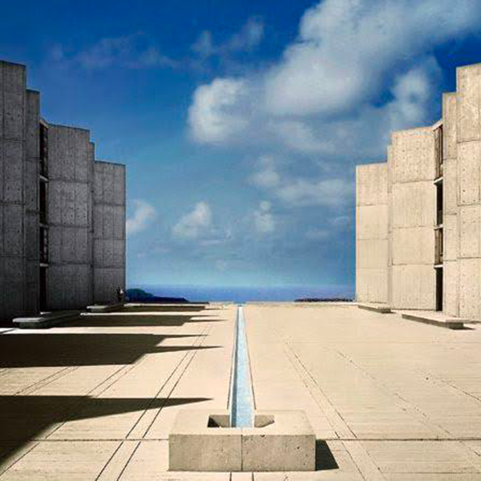
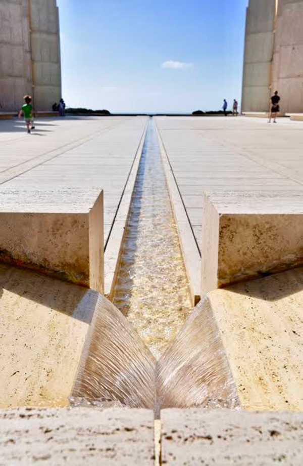
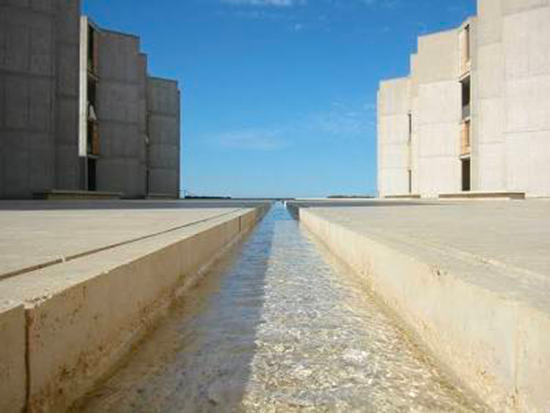
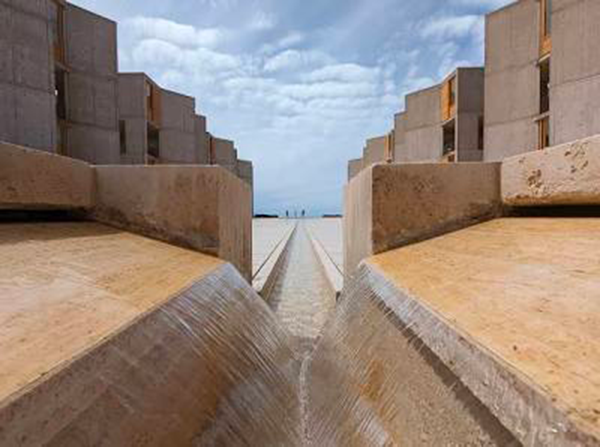
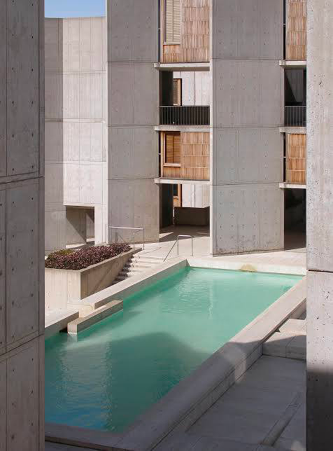
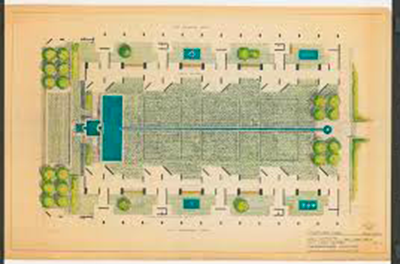
Nel Salk Institute, il grande cortile centrale non è semplicemente uno spazio di distribuzione: è il vero “cuore disciplinare” del complesso, un luogo di sospensione percettiva in cui architettura, luce e paesaggio si integrano in una forma di conoscenza silenziosa. La sua forza risiede nel fatto che Kahn rinuncia volontariamente a ogni decorazione e riduce lo spazio a poche decisioni fondamentali: due ali simmetriche, un piano orizzontale di travertino, la linea sottile dell’acqua, il vuoto dell’orizzonte.
L’asse d’acqua, che scorre al centro del cortile, agisce come una tensione direzionale che orienta il corpo e lo sguardo verso l’oceano. Non è un elemento ornamentale: è la traduzione fisica dell’idea di “ordine” che attraversa l’intero progetto. La lama d’acqua rende percepibile il rapporto tra gravità e luce, tra movimento e immobilità, tra il gesto misurato dell’uomo e l’indeterminazione del paesaggio. Essa diventa così uno strumento conoscitivo, un dispositivo che permette di leggere la profondità dello spazio attraverso un’azione minima e continua: lo scorrere.
Il cortile assume un carattere quasi sacro: è uno spazio che invita alla contemplazione, ma anche al lavoro intellettuale. Jonas Salk aveva chiesto a Kahn un edificio “che ispirasse grandi idee”: la risposta è un luogo che non mostra nulla di superfluo, ma fa emergere la presenza del tempo attraverso il mutare delle ombre, la variazione della luce e la vibrazione dell’acqua. L’architettura non compete con il paesaggio: lo incornicia, lo misura e lo rende esperienza.
In questo modo Kahn riesce a creare una proporzione tra l’uomo e l’infinito: il cortile è uno spazio disciplinare, ma l’orizzonte aperto introduce una dimensione che supera la funzione dell’edificio. La sua grandezza sta nel far convivere ordine e vastità, rigore costruttivo e apertura poetica.
Il Salk Institute non propone una forma da abitare, ma una condizione da percepire: la consapevolezza che l’architettura può essere essenziale e al tempo stesso intensa, materica e metafisica. In questo equilibrio, l’asse d’acqua diventa il segno più puro della poetica di Kahn: un gesto minimo che contiene l’immensità.
B.
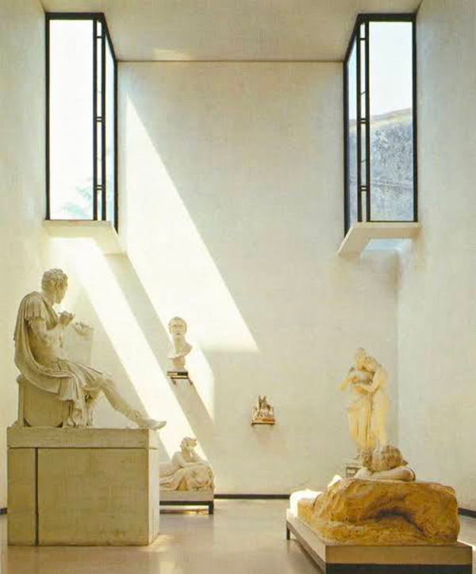
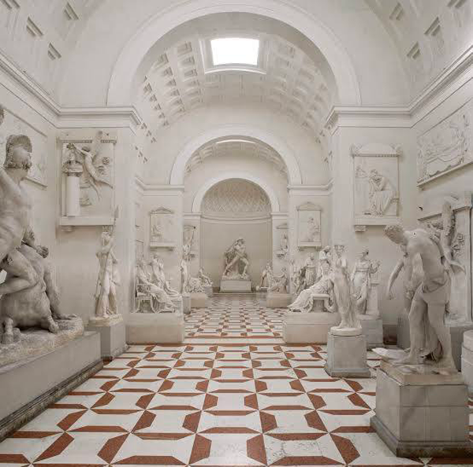
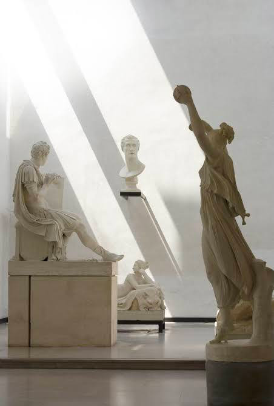
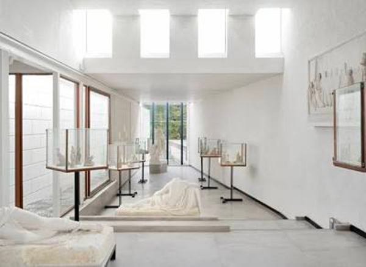
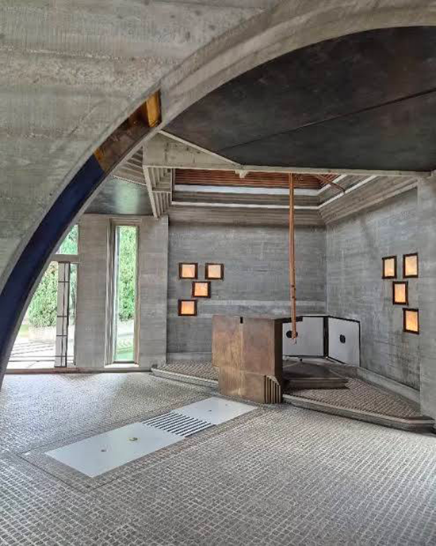
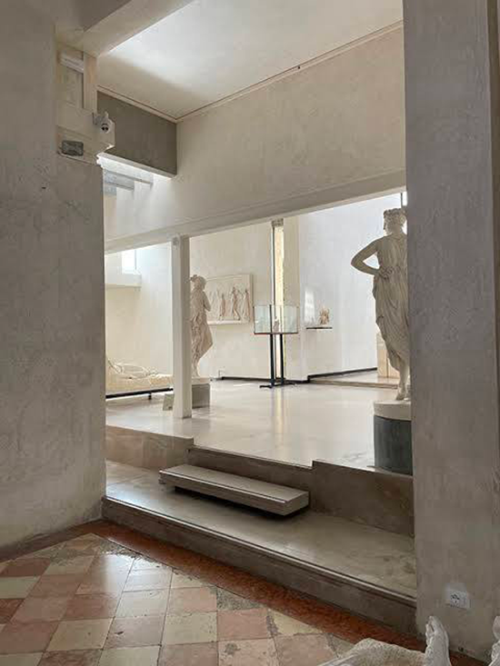
L’intervento di Carlo Scarpa per l’ampliamento della Gypsotheca Canoviana (1955-1957) rappresenta un caso esemplare di come l’architettura possa nascere da un ascolto percettivo del luogo e dell’opera. L’ampliamento non è un semplice contenitore museale, ma un dispositivo spaziale in cui luce, materia, soglia e percorso diventano strumenti per ricostruire il senso delle sculture di Canova. Scarpa lavora su tre principi fondamentali — tutti centrali nella nostra lezione:
C.
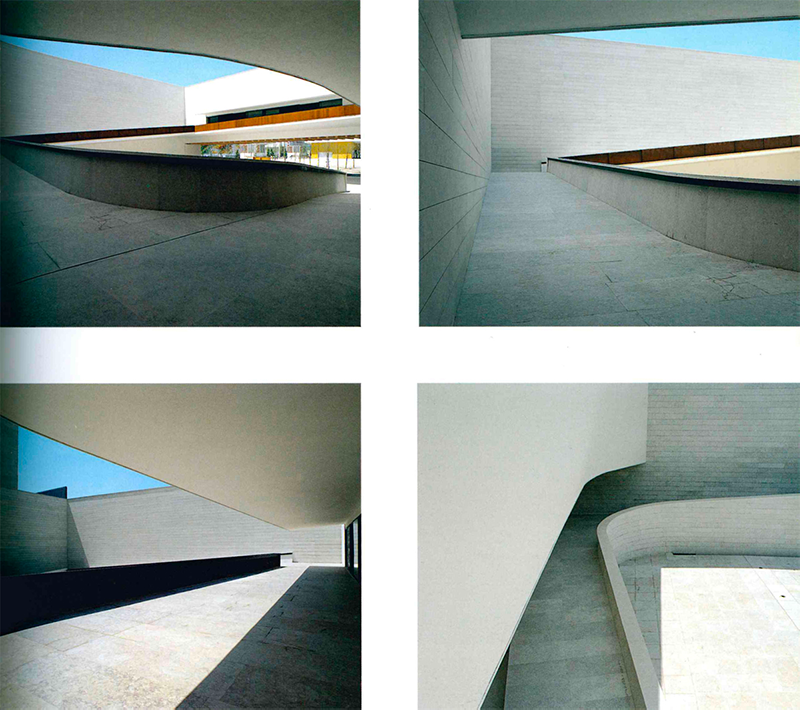
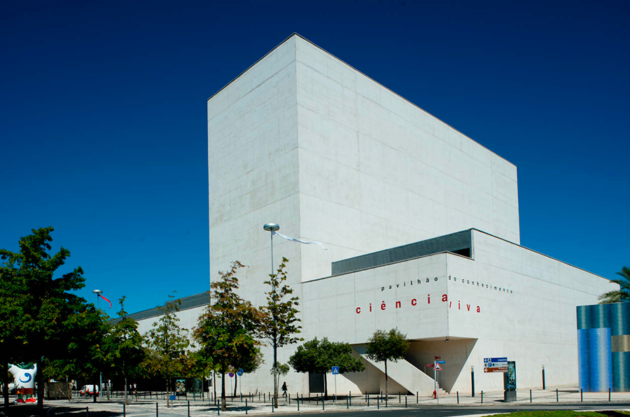
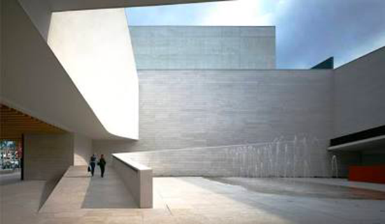
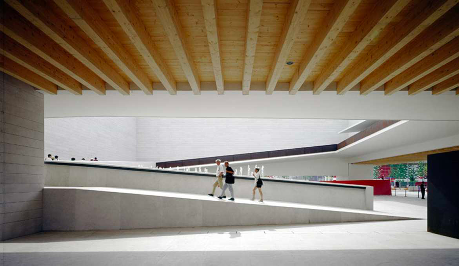
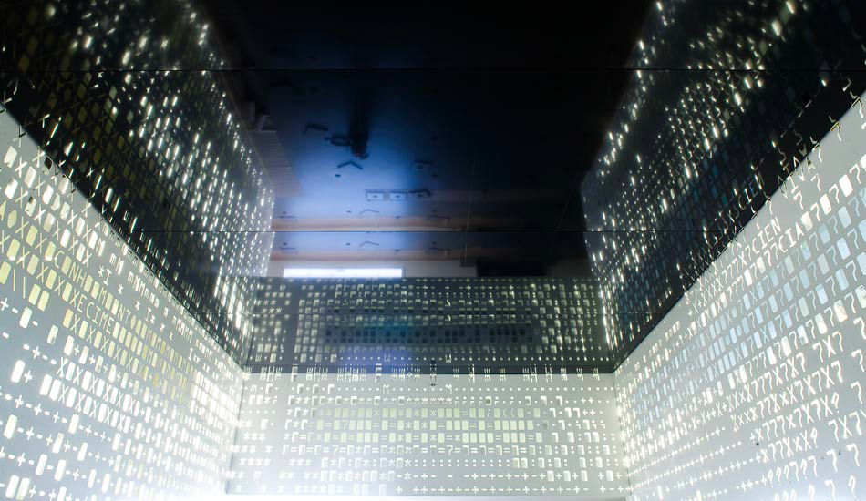
Una massa sospesa come dispositivo percettivo
Il Tagus Pavilion di João Luís Carrilho da Graça è uno degli esempi più radicali dell’architettura portoghese contemporanea, non per un gesto formale evidente, ma per la riduzione estrema dei mezzi con cui costruisce una condizione spaziale di forte intensità percettiva.
L’elemento più iconico, la grande lastra di cemento sospesa, non funziona come un tetto né come una pensilina nel senso tradizionale: è un campo di forze che definisce lo spazio sottostante attraverso il suo peso visivo, la sua ombra, il suo rapporto con il vuoto. La forma non rappresenta nulla, non allude a modelli noti; agisce, semplicemente. È un dispositivo che attiva lo spazio e costringe il corpo del visitatore a percepire la relazione tra massa e vuoto, tra gravità e leggerezza.
Carrilho da Graça costruisce così una soglia atmosferica, uno spazio intermedio che non appartiene né all’interno né all’esterno. La pensilina sospesa produce una tensione costante: sembra gravare sul terreno ma allo stesso tempo galleggiare grazie alla luce che scorre lungo i suoi margini. Questa ambiguità è intenzionale e decisiva: il padiglione non cerca equilibrio statico, ma una condizione percettiva in bilico, che il visitatore deve leggere con il proprio corpo.
L’essenzialità materica — superfici bianche, geometrie elementari, assenza di segni superflui — rende lo spazio una sorta di evento fenomenologico: ciò che conta non è l’oggetto costruito, ma ciò che accade tra il costruito e chi lo attraversa. È un’architettura che mira a produrre esperienza, non immagine; intensità, non decorazione.
Nel contesto dell’Expo ’98, dove molti padiglioni puntavano sulla spettacolarità, il Tagus Pavilion afferma una posizione opposta: l’architettura come concentrazione, come sottrazione, come misura del rapporto tra forma e comportamento. In questo senso, l’opera di Carrilho da Graça è una lezione di rigore, equilibrio e attenzione al carattere atmosferico dello spazio.
La sua forza critica sta proprio qui: nel dimostrare che la monumentalità non nasce dalla dimensione, ma dalla precisione con cui lo spazio viene messo in tensione.